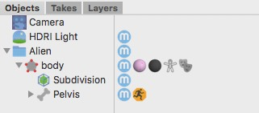

オブジェクトとタグオブジェクトシーン内に作成されたオブジェクトはオブジェクトブラウザ上にリストされています。それぞれのオブジェクトの名前 (もちろん、あなたがいつでも変更できる) は、どんな種類のオブジェクトかを表す小さなアイコン (オブジェクトタグとして知られています) の前、各行の最初の項目として表示されます。最初のオブジェクトタグの他に違うタグが連なっていることもあります。 タグタグはオブジェクトのプロパティを拡張するために使用されます。例えば UV タグを追加すれば、オブジェクトに UV 座標を追加することが出来ます。 オブジェクトにタグを追加するには、オブジェクトブラウザでオブジェクトを選択しツールバーのタグメニューから必要なタグを選ぶだけです。タグは選択されたオブジェクトの項目の一番右側に現れるはずです。タグのプロパティを編集するには、そのタグアイコンをクリックしてください。タグのプロパティはプロパティエディタに表示されているはずです。 |